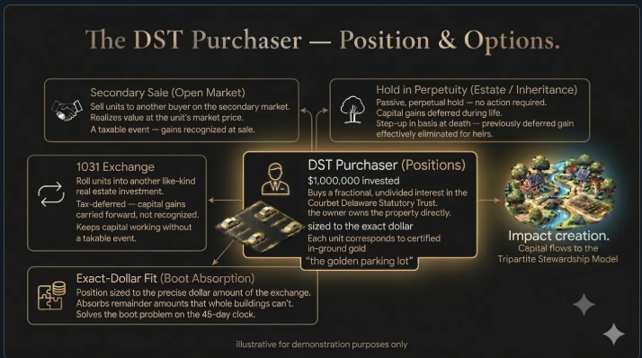
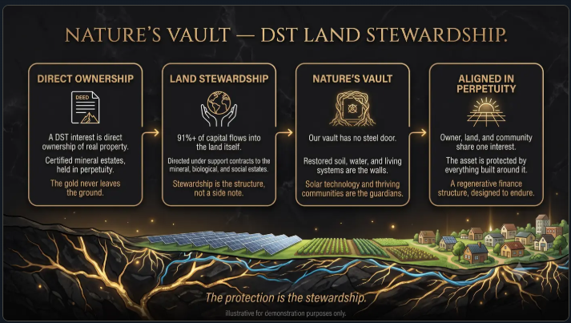

Gold mines, held as deeded real property, become long-duration investment property with stewardship built into the structure.
Illustrative. No specific property is depicted.
Real property
Deeded, recorded and conveyable, like any parcel of land.
Quantified in ground
An independent geologist's technical report estimates the gold-equivalent ounces present.
Perpetual by design
Held rather than extracted. The asset does not deplete.
01 — The asset class
The asset is a mineral estate
Gold in the ground, quantified by an independent geologist's technical report, severed from the surface as its own parcel of real property and conveyed into a Delaware Statutory Trust. Investors hold a beneficial interest, and that interest qualifies as replacement property in a 1031 exchange.
The gold is never extracted. The trust holds nothing that operates, so it never has to sell. Most of what the conveyance raises returns to the land.
02 — How the asset is created
From ground to registered Earth Blocks
It begins as land where the minerals are still attached. A deed severs them, and the mineral estate is recorded as its own parcel of real property, separately described and separately taxed. The estate is then divided into Earth Blocks of equal size and conveyed to a Delaware Statutory Trust, structured so that a beneficial interest qualifies as 1031 replacement property.
Illustrative. No specific property is depicted.
Earth Blocks of equal size, conveyed to a Delaware Statutory Trust, structured so that a beneficial interest qualifies as 1031 replacement property.
03 — The position
The Golden Parking Lot
This asset has nothing to operate and nothing to recapitalise, so there is no full-cycle event. We have taken to calling it the Golden Parking Lot: a place exchange capital can sit indefinitely, on real property whose value is described in ounces of gold.
Gold and real property, two of the oldest stores of value, joined in one deeded asset. No tenants, no leases, no depreciation clock, no demolition date.

Illustrative. No specific property is depicted.
04 — Nature's vault
Stewardship is the structure
The land is divided into three estates held separately: mineral, biological and social. The mineral estate is the financial instrument. The biological and social estates receive the proceeds and carry the stewardship obligations, restoring biological systems and supporting solar and social infrastructure on and around the properties.
Extraction is prohibited by default and can be authorised only through a multi-party approval process set out in the governing instruments. The covenant is recorded against the land and binds later holders.

Illustrative. No specific property is depicted.
Leaving the gold in place is not a sacrifice of value. Gold is not consumed in use, and essentially every ounce ever mined still exists. An estate that is never mined avoids the cost of extraction and the storage, insurance, transport and re-assay that follow it.
05 — Wealth and mission capital
Who is this built for?
Once the instrument is understood, the question becomes your client. Five groups, five different headline reasons.
Gold held as real property, in a position built to stay put
1
Section 1031 treatment
Exchange out of appreciated real estate into a passive beneficial interest, and continue deferring gain.
2
No forced exit
Interests can be held indefinitely. There is no full-cycle event and no rollover to plan around.
3
A legacy that holds
The gold stays in the ground, the land stays whole, and the holding funds regenerative work on the surface.
Does an asset with no termination date change how you think about a hold?
For multifamily offices
A committee-ready real asset where the impact is the mechanism
1
A shelf solution
When client families exit appreciated property, a passive, non-operating replacement interest designed for exchange treatment.
2
Diligence you can document
An independent Certified Professional Geologist's technical report, title work, and a structured diligence binder built for professional review.
3
One answer, two conversations
The tax planning conversation and the values conversation, served by the same allocation.
What would you need to see before putting this in front of a client?
For endowments
Gold for perpetual capital, inside a working model of impact
1
Perpetual by design
No maturity, no forced exit, no rollover. The hold period of in-ground gold is the hold period of the institution itself.
2
Hard assets, clean form
Gold without futures margining, storage cost or fund counterparty risk. Passive, unleveraged, non-operating.
3
A holding that speaks
Value on preserved land, with regenerative work funded by the same allocation.
The interest pays no income, so it sits against the non-income share of the portfolio.
How much room does that share have?
For private foundations
An investment that is the mission
1
Mission by construction
Non-extraction is recorded in the deed rather than asserted in a pledge. A conservation or climate mission can hold gold without contradicting its own screen.
2
Capital preservation
A passive, unleveraged real property interest with no operating business behind it.
3
A clean profile
Real property, no acquisition indebtedness, no operating income at the trust.
The annual distribution requirement still has to be met from elsewhere.
Would your policy treat a recorded covenant as mission alignment, and what analysis would your counsel want on unrelated business taxable income?
For donor-advised funds
Philanthropic capital, two doors in
1
The allocation door
A sponsor investment programme holding the interest directly as a long-duration real asset.
2
The contribution door
A donor contributing appreciated interests held in the structure, subject to appraisal and the sponsor's acceptance policy.
3
Values fit
The proceeds fund stewardship of the land the interest is drawn from.
Illiquid, with appraisal and acceptance questions attached.
Would your gift acceptance policy admit an interest of this kind?
Stewardship is the reason
The tripartite estates, mineral, biological and social, support the work needed to live well on this planet: regenerative farming, restoration, solar, housing, geothermal and more. The mineral estate is not only the instrument. It is what funds the stewardship. The Delaware Statutory Trust holds the severed mineral estate; the land and the people on it are held under separate mandates alongside it.
We are looking for your judgment
Few people who place exchange capital for a living have seen this structure yet. The questions we have not thought of are worth more to us than agreement.
Educational material only. Not an offer to sell or a solicitation of an offer to buy any security, and not a description of any specific offering. Any offer is made solely through definitive offering documents and only to eligible investors.
Quantities are estimates, not measurements. An independent geologist's report classifies the resource, and reported figures carry that classification. No quantity is attributed to any individual Earth Block; all figures are aggregate at the property level. The number of interests offered is substantially lower than the aggregate estimate after applicable reductions and reserve holdbacks.
Beneficial interests are illiquid. Transfers occur through private transactions subject to eligibility requirements and trust agreement restrictions. All investments involve risk, including possible loss of principal. Asset value references the price of gold, which fluctuates.
Whether any transaction qualifies for tax deferral under IRC Section 1031 depends on individual circumstances, applicable law and proper execution. Nothing here is tax or legal advice. Readers and their clients should consult their own advisers.